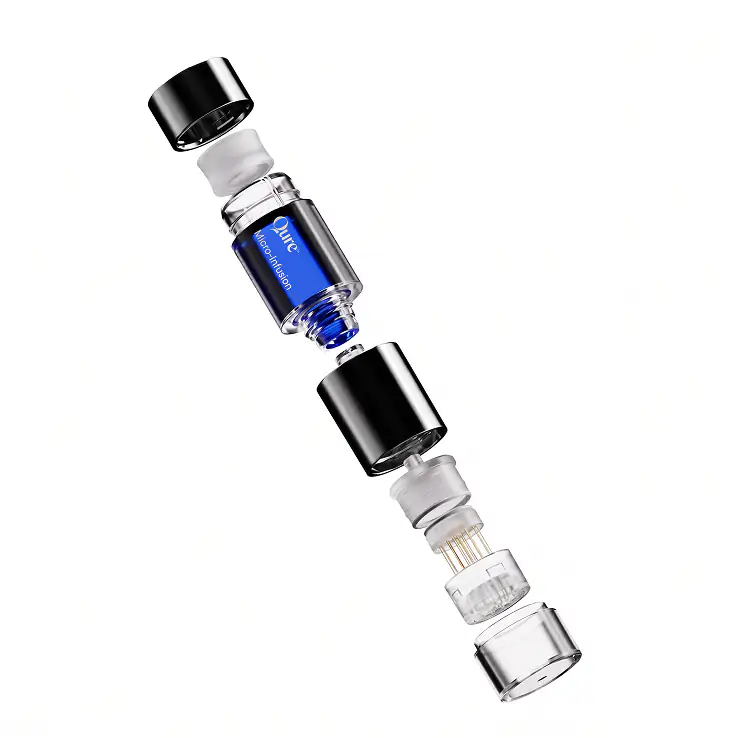
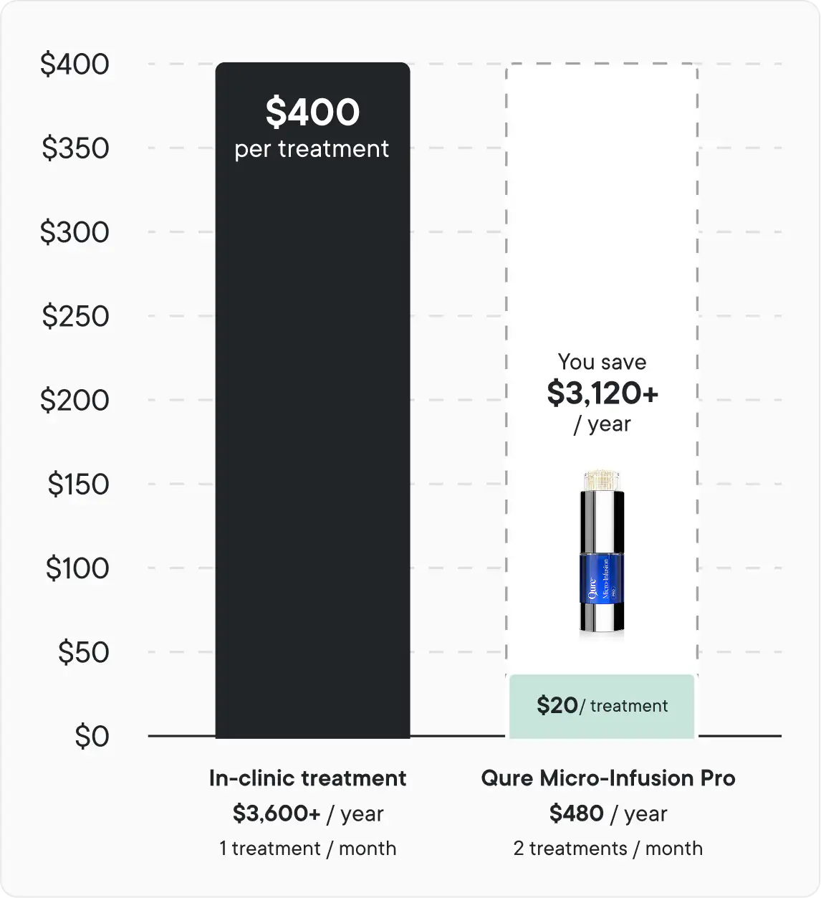
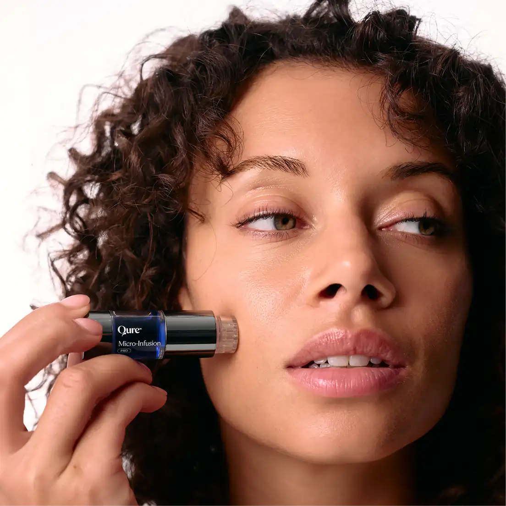
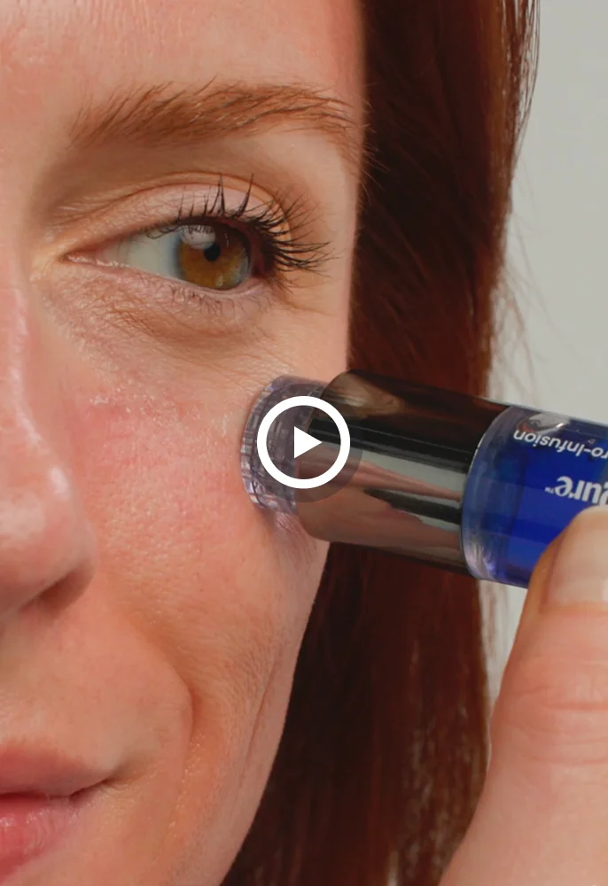
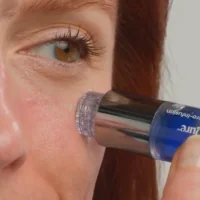
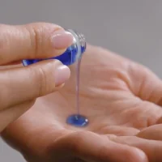

-
Helps reduce look of fine lines, texture and dark spots
A multi-concern treatment that helps smooth the look of fine lines, refine texture, and fade the appearance of dark spots and discoloration.
-
5 minutes, no setup. Sterile, single-use cartridge
Comes preassembled in one sterile, single-use cartridge — just remove the cap and start. No mixing, no assembly, no cleanup.
-
Recommended by 50+ dermatologists
Backed by board-certified dermatologists who recommend Qure to their own patients for safe, effective at-home treatment.
-
Clinic-style treatment at a fraction of the price
Get professional-inspired results without the appointments, travel, or per-visit fees of in-clinic treatments.
-
Increased serum absorption through precision micro-stamping
Each micro-channel is created with precision, helping active ingredients absorb deeper into skin for more effective results.
BRIGHTENING AT-HOME MICRONEEDLING SYSTEM
Micro-Infusion Pro:
Your At-Home Alternative to In-Clinic Microneedling
Subscribe & Save:
OR pay 4 monthly payments of {$dyn} with


Auto-ships · Cancel anytime · No commitment
Upgrade Your Results
Key Benefits
A next-generation Micro-Infusion treatment designed to visibly improve the look of skin:
-
Brighter, More Even-Looking Tone
Less visible dark spots and discoloration
-
Radiant-Looking Skin
Brighter, fresher-looking complexion
-
Smoother-Looking Texture
More refined-looking texture and smoother-looking fine lines
-
Hydrated, Healthier-Looking Skin
Skin feels supple, hydrated and calm
How It Works
Full ingredient list
Water (Aqua), Propanediol, Niacinamide, Glycerin, Tranexamic Acid, Panthenol, Pentylene Glycol, Myrothamnus Flabellifolia Leaf/Stem Extract, Copper Tripeptide-1, Butylene Glycol, Beta-Glucan, Chrysanthellum Indicum Extract, Ethylhexylglycerin, Hydroxyethylcellulose, Allantoin, Hydroxyacetophenone, Sodium Hyaluronate, sh-Oligopeptide-1.

Our favorite treatment that brings you closer to in-office results at home.
Dr. Shah,
Dermatologist


- +50
50+ Board Certified Dermatologists recommend Qure to their patients.
Jump To
Skip the appointment. Keep the treatment.
Micro-Infusion Pro takes what happens in a clinic treatment room (fine needles, active serum, a few minutes) and seals it into one cartridge. A 5-minute treatment with no appointment, no travel and minimal downtime.

One Sealed Cartridge
No vials. No assembly.
Patent-pending design
Consistent serum, better absorption
24K Gold-Plated Needles
EO-sterilized and Single-use
-
No setup. Just start
Serum and needle head arrive sealed in one cartridge. No mixing, no assembly, no instructions to decode. Take off the cap and go.
-
Fresh and sterile, every time
EO-sterilized and Single-use, then thrown away. Nothing to clean, nothing to reuse. Feels professional, not like a cheap roller. Made with 80% recycled material.
-
Same dose, every press
Our patent-pending airless pump delivers a consistent amount of serum every time. Better absorption of actives.
-
Virtually painless
0.5mm 24K gold-plated needles create tiny micro-channels so more serum reaches your skin with minimal downtime. Needle nerves are normal.
Visible results backed by our clinical study


Does it hurt?
What it actually feels like: a light prickle.
Picture Velcro pressed lightly against your skin. That’s the feeling. The 0.5mm needles stamp straight down. No rolling, no dragging, no tugging.
Each stamp creates tiny channels that help your skin take up the serum, for smoother-looking, more radiant skin.
Every treatment starts with a fresh, sterile, single-use needle head, so there’s nothing to worry about on the hygiene side either.
“What I really like about Qure Micro-Infusion Pro is the thought put into safe at-home use. Every treatment starts with a fresh, sterile, single-use needle head. That attention to detail matters.”

Real Skin, Real Transformations

Wrinkles
“I have used the Qure Micro- Infusion System for 3 monthly treatments. The results are clearer, plumper and firmer skin. With further treatments I am looking forward to looking better and better.”
Shelly S.
Smokers Lines
“I am really stunned by how well this product works. I have had professional micro-needling and I wanted the benefits without the downtime. I did my treatment, went to bed and woke up the next morning and was ready to go. My skin looks better than it has in years.”
Jennifer N.
Dark Spots
I’ve done two treatments so far since I got this and my gosh, I have an extreme loss of dark spots. My skin is smooth and I got the dark spot treatment, but it Oohh amazed at this I keep telling everybody about this I cannot believe what an amazing product this is I will continue to buy it, and I will not stop using this for a treatment that you would spend $300 in the salon for just one treatment, how amazing is it to be able to do it at home?”
Janeda T.
Wrinkles
“I have used the Qure Micro- Infusion System for 3 monthly treatments. The results are clearer, plumper and firmer skin. With further treatments I am looking forward to looking better and better.”
Shelly S.
Dark Spots
I’ve done two treatments so far since I got this and my gosh, I have an extreme loss of dark spots. My skin is smooth and I got the dark spot treatment, but it Oohh amazed at this I keep telling everybody about this I cannot believe what an amazing product this is I will continue to buy it, and I will not stop using this for a treatment that you would spend $300 in the salon for just one treatment, how amazing is it to be able to do it at home?”
Janeda T.Clinic-inspired results. Without the clinic price.

Save over $3,000 a year with Qure Micro-Infusion Pro.
- 5-minute treatment
- No appointments or travel
- Professional-inspired glow from home
How it works
Go beyond surface-level skincare
Traditional creams are applied to the skin’s surface, where the skin barrier can limit how effectively active ingredients are absorbed.
Qure uses ultra-fine, 24K gold-plated 0.5 mm microneedles to create tiny microchannels on the skin’s surface. As you stamp, concentrated serums are applied with precision, helping active ingredients absorb more effectively where they’re needed.
6 Target Areas - 1 Solution
-
 Forehead Wrinkles
Forehead Wrinkles
-
 Eye Wrinkles
Eye Wrinkles
-
 Smoker’s Wrinkles
Smoker’s Wrinkles
-
 Limp Neck
Limp Neck
-
 Laugh Lines
Laugh Lines
-
 Age Spots & Pigmentation marks
Age Spots & Pigmentation marks

Science-Backed Micro-Infusion Pro
Micro-Infusion Pro
- Brighter-Looking Skin
- Reduced Look of Dark Spots
- Smoother-Looking Texture
What can it do for your skin
Helps reveal a smoother-looking, more radiant complexion. Formulated to help improve the appearance of dark spots and uneven tone for skin that looks refreshed and luminous.
Skin Concerns: Ideal for skin that appears uneven in tone or texture and shows visible dark spots or post-blemish marks..
All Ingredients
Epidermal Growth Factor (EGF): A science-backed ingredient known to support the look of smoother, hydrated, and more refreshed skin. Helps visibly reduce the look of fine lines and uneven tone.
Niacinamide: A multi-benefit vitamin known to help improve the look of uneven tone, minimize visible pores, and support smoother-looking skin.
Tranexamic Acid: A brightening ingredient that helps visibly improve the look of dark spots, uneven tone, and dullness.
All ingredients:
Rosa Damascena Flower Water, Propanediol, Glycerin, Tranexamic Acid, Niacinamide, Panthenol, Chrysanthellum Indicum Extract, Ethylhexylglycerin, Tripeptide-1, Xanthan Gum, Allantoin, Sh-Oligopeptide-1.
Trusted and Recommended by Skin Experts
Backed by skin experts. Designed to target visible signs of aging at home.

Dr. Shah
Board Certified Dermatologist

Dr. Maxfield
Board Certified Dermatologist

Dr. Alekandra Brown
Board Certified Dermatologist

Dr. Lindsey Zubritsky
Board Certified Dermatologist

Dr. Alexis Stephens
Internal Medicine Doctor

Dr. Prem Tripati
Facial Plastic Surgeon
FEATURED IN



See how quick and easy it is to use
-
Cleanse
Cleanse your face thoroughly and spritz the Dermal Mist to refresh and prepare your skin further.
-

Treatment
Start at the centre of the face and work your way outward to cover the full face.
-

Aftercare
Once the treatment is complete, pat the remaining serum into skin. The system is designed for single use.
Have questions?
What are the benefits of Micro-Infusion?
The stamping action of the Micro-Infusion device creates tiny micro-channels on the surface of the skin, helping to enhance the absorption of active ingredients and visibly refresh the complexion.
The serum you choose during your Micro-Infusion treatment will deliver visible results over time. Very fine needles help apply concentrated ingredients exactly where they’re needed to target specific skin concerns with precision.
You can switch up your treatments or even mix the two serums together!
Visible benefits of Micro-Infusion may include:
- More even-looking skin tone and texture
- Glowing, refreshed-looking complexion
- Softer-looking fine lines
- Skin that feels renewed and rejuvenated
How quickly will I see results?
Micro-Infusion treatment is an effective skin-boosting step, and many users report a visible radiance boost, glowy-looking complexion, and skin that feels more hydrated within a day or two after their first treatment.
The more consistently you use the treatment, the more visible improvements you’ll likely notice over time. This easy-at-home facial is perfect to use a day or two before a big event, when you want your complexion to look and feel refreshed.
Don’t forget to keep up with your everyday skincare routine to help maintain the results of your Micro-Infusion treatment and keep your skin looking its best long-term.
Timeline of Visible Results
After 1–2 Treatments (Weeks 1–4):
- Typically users experience mild redness post-treatment – this is a normal response!
- Skin looks more hydrated, plumped, and refreshed.
- Complexion appears smoother and more radiant.
After 4 Treatments (Around 8 Weeks):
- Fine lines begin to appear softened.
- Skin tone looks more even and bright.
- Hydration feels longer-lasting.
After 6+ Treatments (12 Weeks and Beyond):
- Complexion looks clearer and more balanced.
- Skin feels firmer with improved elasticity.
- Texture appears smoother and more refined.
- Overall skin looks more resilient and youthful.
Is it painful to use?
You can expect minimal discomfort and maximum results with Qure’s Micro-Infusion System.
Although the needles themselves are finer than most at-home needling systems (making it more comfortable), the ultra-fine tips are thinner than a human hair, so you’ll feel only a mild sensation during treatment.
During the initial stages of use, you may experience a slight sensation or pricking feeling as the needles make contact with the skin, but you’ll quickly get used to the feeling.
How often can I use the treatment?
We recommend performing a Micro-Infusion treatment every 2 weeks for best results.
When is the best time to do Micro-Infusion?
We recommend doing the treatment at night before bed. Avoid being in the sun and using makeup for 24 hours after treatment. For more information on post-treatment care, visit our safety guide.
Can I use it around the eyes and on the neck?
Yes, you can use Micro-Infusion around the eye area to help smooth crow’s feet. Just ensure to apply a very gentle pressure and only do one pass. Monitor your skin accordingly as everyone’s skin is different.
Performing Micro-Infusion on the neck can help improve the look of fine lines and rejuvenate the skin’s appearance. It can target issues such as neck creases, horizontal lines, and age-related skin concerns to help enhance the overall texture, tone, and look of this area.
Can I use a different serum with the Micro-Infusion device?
No — only use the provided Qure serum with your Micro-Infusion Device.
Please keep in mind that not all serums are suitable for Micro-Infusion. Some may cause irritation and should be avoided. Our serums and ampoules are specifically developed for Qure’s Micro-Infusion System, with gentle, fragrance-free formulas designed with care for all skin types.
How is this different to micro-rolling?
Micro-Infusion focuses on improving the skin’s appearance by creating micro-channels on the skin’s surface. It does not alter or affect skin structure or function.
With Micro-Infusion, you not only enjoy the visible benefits of micro-needling, but also deliver science-backed ingredients to targeted areas with precision — helping the skin appear smoother and more radiant.
Tranexamic Acid Notice
If you live in Australia, you may receive a notice from Border Force regarding tranexamic acid (TXA) in your order. Here’s what you need to know:
In Australia, TXA is classified as a Schedule 4 (prescription-only) drug only when used orally or by injection for treating melasma or other medical conditions. However, topical TXA in cosmetic formulations is permitted.
Our serums are purely for cosmetic use and do not claim to treat medical conditions. They are applied topically (not injected) and are classified as a cosmetic product rather than a prescription medicine.
Our products are compliant with Australian regulations. Facial serums containing up to 3% TXA for cosmetic purposes are not classified as prescription-only medicines and do not require inclusion in the Australian Register of Therapeutic Goods (ARTG).
If Border Force requires clarification, you can provide the information above to confirm that the product complies with Australian regulations. If further details are needed, they can refer to the Therapeutic Goods Administration (TGA) guidelines on cosmetic formulations.
If you need further assistance, feel free to contact our support team — we’re happy to help!